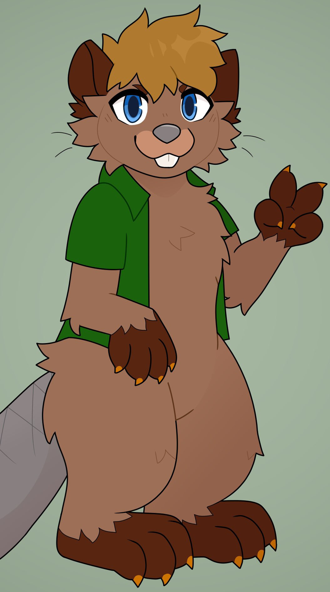

Oh the furbanity!
City living 2 : electric beltline boogaloo
Your hosts
Kezz & Ponder Beaver 🦫

What is a city?
What makes a good city?
What is the infamous 15 minute city?
What is walkability?
Welcome to Atlanta
A great place to live?
A great place to drive!
As evidenced by:
Midnight Club Dub Edition III
But what if you don't drive?
Well, there's Marta...？
Virgin 38 stations | 193,000 daily riders | 48 Miles

Surprise DC Area Metro for
comparison:
Chad 97 stations | 326,000 daily
riders | 129 miles
Some uniquely Georgian bike lanes:

Often better in practice than in theory:

Enter : The Beltline
The world of Rails to
Trails
(and their unintended
consequences)
Trains to treads
My local one : The North Shore Rail Trail
(Long Island New York)
The Atlanta Beltline
So... We good?
Not exactly...
Enter : Capitalism
What is gentrification?
What is speculation?
and what can we do about it?
Remember the Gucci of fursuits?
BE WEIRD!
BE UNMARKETABLE! MAINTAIN YOUR UNIQUENESS!
And also... Hold public private partnerships accountable!
Beltline Video on
YouTube